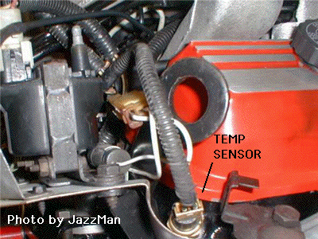
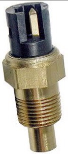
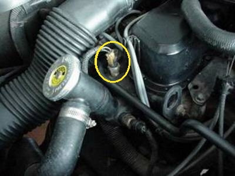
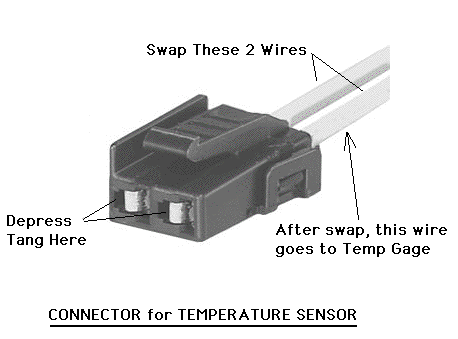
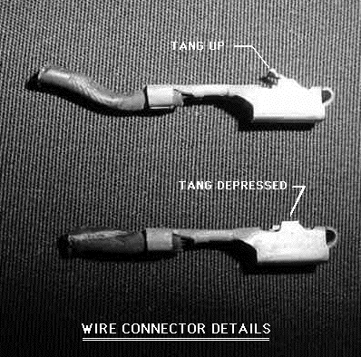
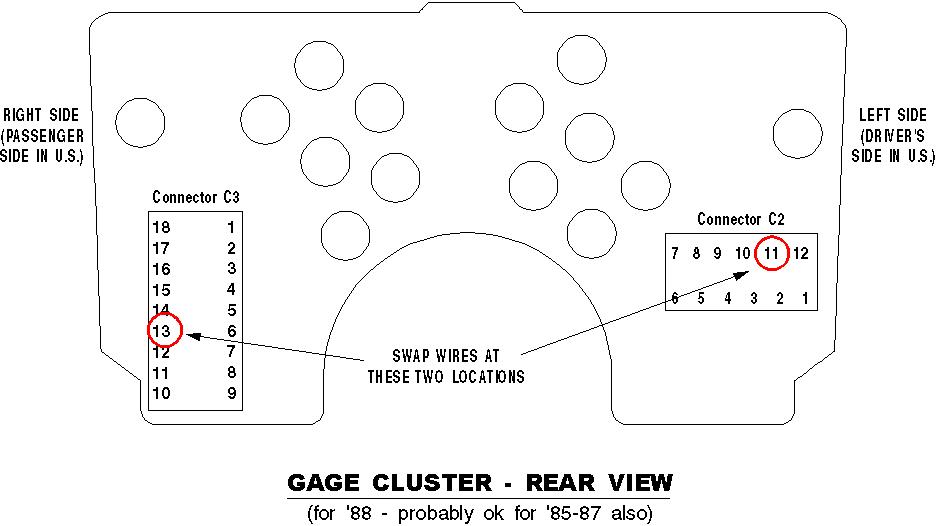
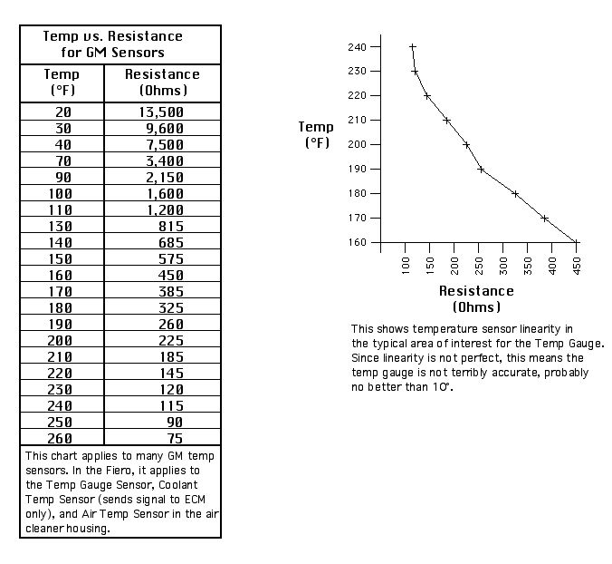
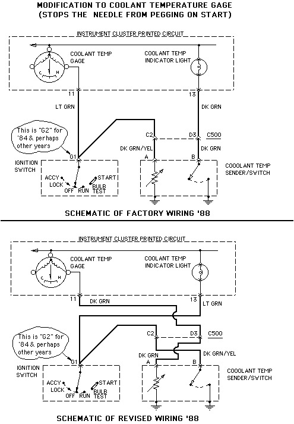

<!--
title: fierosails.com
description: 
published: true
date: 2025-10-29T20:54:53.726Z
tags: fierosails
editor: code
dateCreated: 2025-10-29T20:54:53.726Z
-->

<table border="0" cellpadding="0" cellspacing="5" width="100%">
  <tbody><tr> 
    <td align="left" height="1200" valign="top" width="15%"> 
      <p>&nbsp;</p>
      
      <font face="Verdana, Arial, Helvetica, sans-serif" size="2">

</font><p><font face="Verdana, Arial, Helvetica, sans-serif" size="2">

     <a href="index.html">HOME</a><br>
     <a href="order.html">Order Form</a><br><br>
     
     Sail Panels<br>
     <a href="pics.html">- Sail Panel Choices</a><br>
     <a href="whats.html">- What's a Sail Panel?</a><br>
     <a href="howto.html">- How to Remove &amp; Replace Sail Panels</a><br>

     <a href="custom.html">- Custom Graphics</a><br>
     <a href="bargains.html">- Bargains</a><br>
     <a href="care.html">- Sail Panel Care</a><br><br>
     
     Decals<br>
     <a href="decal.html">- Decal Choices</a><br>
     <a href="bargains.html">- Bargains</a><br><br>

     
     Parts<br>
     <a href="paulsphotos.html">- Parts for Sale</a><br>
     <a href="PartsManual.html">- Parts Interchange Manual</a><br>
     <a href="heatshield.html">- Firewall Heat Shield</a><br><br>
     
     Info<br>
     <a href="fierosecrets.html">- Fiero Secrets</a><br>

     <a href="tempgage.html">- Temp Gauge Fix</a><br>
     <a href="InjectorTester.html">- Poor Man's Fuel Injector Tester</a><br>
     <a href="headlights.html">- Headlight Repair</a><br>
     <a href="ElectricAntenna.html">- Fiero Electric Antenna!</a><br>
     <a href="belt.html">- Fix That Loose Belt!</a><br>
     <a href="clubs.html">- Fiero Clubs</a><br><br>

     <a href="payship.html">Payment &amp; Shipping</a><br>
     <a href="refs.html">References</a><br>
     <a href="gallery.html">Rogue's Gallery (photos)</a><br>
     <a href="email.html">Contact Us</a>

<br>
        </font> </p>

    </td><td bgcolor="#FF0000" height="1200" valign="top" width="1%"></td>
    <td align="left" valign="top" width="84%"> <font color="red"> 
      <h1 align="CENTER">TEMPERATURE GAUGE REPAIR</h1>
      </font>  
      <p> <font face="Verdana, Arial, Helvetica, sans-serif" size="2"><b>TEMPERATURE GAUGE - STOP IT FROM PEGGING ON START</b>

</font></p><p><font face="Verdana, Arial, Helvetica, sans-serif" size="2">The Fiero temperature gauge is infamous for "pegging" (violently moving to its 
maximum range) when the engine is started.  This sudden acceleration of the gauge 
needle can be more than just annoying; over time it can loosen the needle such that 
it becomes inaccurate or falls off.  Mine fell off.</font></p><font face="Verdana, Arial, Helvetica, sans-serif" size="2">

<p>Why does the gauge "peg"?  The factory wiring applies a full 12 volts across the 
temperature gauge when the ignition key is turned to "Start".  This momentary connection 
is called the "Bulb Test" position and shows at a glance that critical warning lights 
are functional.  Unfortunately it appears GM made a mistake and connected the Bulb 
Test feature to the Temperature Gauge instead of the Temperature Warning light.</p>

<p>The fix is simple and requires no wire cutting, splicing, or soldering.  Just swap 
two wires on the sensor and two wires at the instrument cluster.  That's it!  The 
result is the Bulb Test is applied to the Temperature Warning light and the Temperature 
Gauge works normally.</p>

<p>The temperature sensor has a two-wire electrical connector.  One of the wires 
feeds the temperature gauge and the other feeds the high-temperature warning light.  
They are very easy to swap.  The sensor for the V-6 is on the cylinder head near 
cylinder #5 just below the ignition coil.  The sensor on the 4-cylinder engine 
sticks straight up on the head next to the coolant filler neck.</p>
<hr><p>Here are photos of the V-6 sensor installed (left photo) and removed:</p>

<p><a href="images/sensor.gif"></a>

<a href="images/TempSensor.jpg"></a></p>

<p></p>
<hr><p>Here is a picture of the installed L4 sensor:</p>

<p><a href="images/L4Sensor.jpg"></a></p>

<p>Pull the plastic connector housing from the sensor (you must depress the locking tab), remove the wires from the connector, then swap their locations when re-inserting them.  The tangs on the wire connectors (inside the plastic housing) MUST be depressed prior to pulling the wires from the connector housing.  I use a small jeweler's screwdriver to do this.  The tangs should be pulled up again prior to re-inserting them into the plastic connector or else the wires may pull out over time.  Details of the wire connectors shown below.</p>

<hr>Here is a picture of the connector housing:<p><a href="images/connector.gif"></a></p>
<p></p>

<hr>Here is a picture of the wire connectors which slide inside the above connector housing:<p><a href="images/ConnectorCloseup.gif"></a></p>

<p>After swapping wires on the sensor plug you must change wires on the back of the instrument cluster. 
Wiring at the instrument cluster requires swapping wires at locations #11 <b>on the left side 
of the instrument cluster</b> and #13 <b>on the right side of the instrument cluster</b>.  The 
instrument cover must be removed to do this and if you can't get enough slack in the wires it may 
be necessary to remove (or lift) the dash.  (You could also splice additional length to the wires.)  
Removal of the instrument cover requires pulling five screws on the top and two underneath the cover.  
The wire in location #11 is on the left side of the instrument cluster behind the speedometer 
in '88 Fieros.  (The wire on mine was light green.)  It may be elsewhere in other years but is still #11.  
Look for a large bundle of wires and then look for the identification number on the connector.  Here's 
a sketch of the wiring locations on the back of the instrument cluster:</p>

<p><a href="images/GageCluster.jpg"></a></p>
<p></p><p></p>

<p>At least in '88 Fieros the wire in location #13 is on the right side of the instrument 
cluster behind the tachometer in the large bundle of wires.  (The wire on mine was dark green.)  
It may be located elsewhere in other years but it is still #13.  Look for the identification 
number on the connector.  Unplug #11 and #13 (depress the tang on the end of the wire 
connector while pulling gently) and get enough slack in each wire so they can be swapped.  
The wrapping tape on each wire bundle may have to be removed.  I replaced my tape with nylon 
wire-ties.  When enough slack is available, plug the wire from #11 into #13 and vice-versa.  
You may wish to re-route the wires for neatness.  Test the revision by starting the engine.  
If all is well, re-assemble.  If not, re-read these instructions carefully and check your work.</p>

<p>If you unplug a group of wires in the back of the instrument cluster to access the two 
specific wires you need, be sure to replace all of them carefully.  Poor connections cause 
strange problems.  For example, poor connections on the group of wires in 
connector C3 (on the right side behind the speedometer) can cause the fuel gauge to 
peg and the turn signal indicator lights to glow.</p>

<p>A diagram of the factory wiring (from the '88 manual) and the revised wiring are shown 
below.  (The diagram in the Haynes manual which presumably covers all years is the same 
except for wire colors.)  <b>The wire colors below are for the '88 Fiero.</b>  I believe 
wire colors vary from year to year and between engines; I have not researched the 
differences.<b>  The swap is simple and wire colors are not needed to complete it.</b></p>

<p>"Ralpy" from Pennock's Fiero Forum has provided the following information for the 1984 
Fiero: (also see 
the bottom of the page for more info on the '84)</p>

<p>"I looked up info on '84s in the factory service manual. Here's what it shows:"</p>

<p>"From gauge thru ignition switch to sending unit the wire is Dark Green. The wire 
occupies position 11 in connector 205 which is located behind left hand side of instrument cluster."</p>

<p>"For the Warning Indicator Light (both temp and oil pressure) the wire is Tan all the 
way from light to temperature/oil pressure switches.  The wire occupies position 6 in 
connector 206 which plugs into the cluster on the right hand side."</p>

<p>Thanks Ralpy!</p>

<p>The plastic connector housing at the temperature sensor or the plastic head on 
the sensor itself may be broken due to long-term heat exposure.  If you want to 
replace them, the connector housing is AC Delco #PT110 available from NAPA for about 
$18.  They are available in the chain auto parts stores too as CAR-PAK #92-7098.  
The sensor is part number 25036809 for about $21 (plus shipping) from 
gmpartsdirect.com.  Non-GM (AC Delco) sensors are about $10 in parts stores.  You 
can also find both these parts in salvage yards.  They are most plentiful on Tech 4 
engines although not all Tech 4s had this particular sensor/connector.  If you 
replace the sensor, note that it relies on electrical contact with the engine.  
Therefore do not use any insulating material on the threads such as Teflon tape or 
pipe dope.  There are compounds which will seal and conduct electricity, but you 
probably can get by without it.  The sensor threads are tapered and the body is soft 
brass so clean threads and a good snug fit should be all you need.  The sensor 
requires a 21 mm deep socket to remove although an adjustable wrench may work on 
the 4-cylinder engine if you have enough room to swing it.  There is definitely not 
enough room on the V-6.</p>

<p><b>TROUBLESHOOTING</b></p>

<p>At this point perhaps you have swapped wires but the temp gauge doesn't read 
correctly or the temp warning light does not function when you turn the ignition 
switch to ON.  The first thing to test is the sensor wiring.  Pull the plug off the sensor 
and ground either of the two sensor wires to the engine.  This should cause either 
the temp warning light to come on or the temp gauge to peg.  If this does not happen 
then something is amiss in the wiring between the sensor and instrument panel.  Try 
grounding the second sensor wire to see if it causes either a gauge or lamp reaction.  
If one wire works and the other does not, at least you have narrowed the problem 
area.  Typical problems are at connectors, especially the connectors in the back of 
the gauge panel, but you could also have bad connectors at the sensor end.  In an 
old car you could also have a bad wire where it has been burned with contact to the 
exhaust header, broken where it has been flexed, or grounded due to abraded insulation.
  These latter problems are rare, but in an old car, you never know.</p>If you get the correct reaction when grounding the sensor wires at the engine but 
not when the wires are connected to the sensor, either the wiring in the sensor plug 
is bad or the sensor itself is bad.<p></p>

<p>If you are certain your sensor and wiring are good but you don't get a temp 
warning light, check the bulb in the panel.  It may not be seated properly or may be 
bad.</p>

<p>If the sensor and wiring are good and the gauge does not peg with its input wire 
grounded, make sure your battery is properly charged since low voltage will not peg 
the meter.  With good wiring and good battery voltage the gauge should peg when the 
sensor wire is grounded.  If not, suspect a bad gauge. Used gauges can be had from 
thefierofactory.com or fieroservice.com, and new ones from the Fiero Store (fierostore.com).</p>

<p><b>ZEROING THE GAUGE</b></p>

<p>If your temperature gauge is pointing in some odd direction or seems erratic, you 
can test it for accuracy if you have the appropriate resistors.  Resistors come in standard values and 
are not available at the specified gauge limits of 55 Ohms and 1365 Ohms.  Buy resistors of 47 Ohms and 
1400 Ohms (at Radio Shack or Fry's) to get you in the general vicinity of the gauge limits.</p>

<p>The position of the needle on the temperature gauge shows the resistance of the 
element in the temperature sensor.  In other words, the gauge is an Ohmmeter.  The 
gauge is supposed to read 100 degrees F when the sensor resistance is 1365 Ohms and 
260 degrees F when the sensor resistance is 55 Ohms.  To test the gauge for accuracy, 
pull the plug at the sensor, stick one end of a resistor in the plug and ground the 
other end of the resistor to the car.  Turn the ignition to "On".  If you don't get 
any readings, try the other location on the 
connector.  Assuming the test resistor is near one of the values mentioned above, 
your gauge should be in the general vicinity of either 100 or 260 degrees F.  If not, 
the needle has probably shifted.  Test with both resistors to determine the gauge reads 
about right at both ends of the scale.</p>

<p>To zero the needle on my gauge I simply flicked it with a finger until it was 
accurate.  But if the gauge wiring has not been modified it will continue to "peg" 
on start and will quickly become inaccurate again.</p>

<p>If zeroing the needle will not result in accurate readings with good test 
resistors then it's probably time to replace the gauge.</p>

<p><b>TESTING THE SENSOR</b></p>

<p>There are two devices in the sensor, the gauge resistor and the high temperature switch.  (The gauge 
resistor is a solid-state device like a transistor.)  The gauge 
resistance function can be checked by putting an ohmmeter across the appropriate pin and the body of the sensor, 
then changing the temperature of the end of the sensor.  A candle or lighter should be enough to 
determine if the gauge resistor is functioning.  The temperature switch can be verified if the sensor 
is heated enough (theoretically 257F).  With high heat, the temp switch will close and you can 
verify this with an ohmmeter.</p>

<p>If you want to verify and adjust the accuracy of the gauge sensor it may not be simple to achieve perfection. 
The car battery voltage is applied across the sensor in series with the temperature gauge. As the temperature 
of the sensor changes, the current flowing through it and the gauge will change. Putting an ohmmeter across the 
terminals of the sensor will not duplicate this setup and therefore resistance readings indicated by the 
ohmmeter may not reflect the in-car situation. It is possible to duplicate the setup on a workbench but it 
is not worth the trouble. It is easier to measure the resistance vs. temperature of the sensor on a bench 
with an ohmmeter and compare it to the published figures for GM temperature sensors. A chart is show below 
which has the GM theoretical values and can help determine if your sensor is reasonably close. There are 
many aftermarket sensors which have been reported to cause inaccurate results, so this exercise is worthwhile 
if you are installing a new sensor, so this exercise is worthwhile if you are installing a new sensor.</p>

<p>Note that the chart reflects out-of-circuit values (resistance is read directly from the sensor).  Therefore 
the resistance readings do not correspond directly to the published resistance figures mentioned above for the 100 and 260 
degree points.  For example, the sensor resistance in the Fiero is supposed to be 1365 Ohms for the gauge to read 
100 degrees.  Looking at the chart, the resistance at 100 degrees is 1600 Ohms, not 1365.  We understand the 
difference is caused by circuit components such as the gauge and wiring.  In any case,
we understand the chart is correct for out-of-circuit testing (but we have not personally verified this).</p>

<p><a href="images/T_vs_R.jpg"></a></p>

<p>It is easier to check the accuracy of the temperature switch.  The temperature switch should 
close at 257 degrees F and open as the temperature falls back to 230 degrees.  You can test this in a hot 
oil bath with an ohmmeter across the proper terminal and the body of the sensor.  Of course you will need 
an accurate thermometer for this.  If you try this, the oil will be hot to do the test and with wires 
hanging on the sensor it will be easy to have an accident.  Be very careful!</p>

<hr><p><a href="images/GageCirc.jpg"></a></p>

<hr><p>Steve Hunter passed on the following procedure which he used on his '84 SE:


</p><p>Steve said he tried the swap described above but his coolant gauge still pegged when the ignition key was 
turned on.  The problem is that for '84 Fieros the oil pressure switch is connected to the same wire that runs to the coolant 
temp sender/switch.  So after swapping the wires according to our instructions, the coolant 
temp gauge pegs and remains pegged until the oil pressure comes up above 4 PSI and opens the oil pressure 
switch.  This problem is apparently only on the '84 Fiero.

</p><p>Here is the clever fix suggested by Steve:

</p><p>Leave the factory wiring as-is (do not swap wires as in our procedure above).

</p><p>Follow the green wire from the temp gauge to the ignition switch.  This green wire plugs 
into the multi-pin plug on the ignition switch in either the G1 position or the G2 positon.  (Steve 
said this wire in his '84 was in the G2 position but Josh French found it at G1.  The important point 
is to remove the double wire whether it's at G1 or G2.)

</p><p>Pull the wire out of the plug, wrap some electrical tape around it so it will not ground 
to anything, and you are done.  The "bulb-test" feature is now bypassed!


</p><p>The ignition switch plug is a little out of the way - under the dash, on top of the steering column.

</p></font><p><font face="Verdana, Arial, Helvetica, sans-serif" size="2">NOTE: This fix will eliminate the "pegging needle" problem but will not enable the "Bulb Test" feature for 
the Temp Warning light.
</font></p>


</td></tr></tbody></table><!--
     FILE ARCHIVED ON 03:26:50 Oct 06, 2014 AND RETRIEVED FROM THE
     INTERNET ARCHIVE ON 23:55:20 Oct 26, 2025.
     JAVASCRIPT APPENDED BY WAYBACK MACHINE, COPYRIGHT INTERNET ARCHIVE.

     ALL OTHER CONTENT MAY ALSO BE PROTECTED BY COPYRIGHT (17 U.S.C.
     SECTION 108(a)(3)).
-->
<!--
playback timings (ms):
  captures_list: 0.539
  exclusion.robots: 0.022
  exclusion.robots.policy: 0.013
  esindex: 0.009
  cdx.remote: 22.419
  LoadShardBlock: 196.727 (3)
  PetaboxLoader3.resolve: 168.727 (3)
  PetaboxLoader3.datanode: 186.064 (4)
  load_resource: 189.481
-->